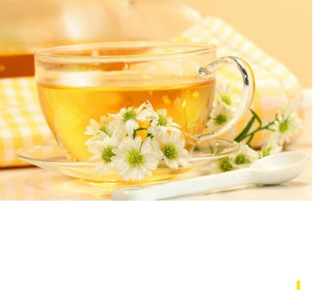

云南一起发财自动泡茶机科技责任有限公司
前言：
茶这种特殊的饮料起源于中国，在古代曾一度成为欧洲皇室炫耀的资本，而中国自古以来又有比较浓厚的饮茶文化，长期的积淀以至于出现吃饭前都得有先喝茶的习惯，甚至岭南一代还将吃早餐直接引申为“饮早茶”，那么对于泡茶而言，我们如何才能浸泡出一壶口感香醇的好茶呢？
 不同的茶品在浸泡温度、时间和浸泡水量都不尽相同，作为普通人而言，确实非常难以浸泡出大师级的好口感，也正因如此，市场上才出现另一种特殊的产品——泡茶机。这不仅使普通人能享受到茶水的香醇，同时也成为懒人泡茶的福音。
不同的茶品在浸泡温度、时间和浸泡水量都不尽相同，作为普通人而言，确实非常难以浸泡出大师级的好口感，也正因如此，市场上才出现另一种特殊的产品——泡茶机。这不仅使普通人能享受到茶水的香醇，同时也成为懒人泡茶的福音。
产品的外观与细节：
TEAMOSA智能泡茶机,产品旨在打造3分钟“一键茶道”的理念，让传统泡茶煮水、灌水和浸泡等多种繁琐操作一气呵成，3分钟即可泡出好茶。 速度很快，只需加入茶叶，并根据不同的茶品而选择不同的泡茶时间和温度，一键泡茶即能自动出茶。如果你不会各种茶品的浸泡时间和温度也无需担心，厂家已经为这款产品提供了一款可供链接使用的智能App，能通过蓝牙或者WIFI对机子进行连接，并提供各种茶品的泡茶参数，在手机上就能对机子进行准确调节，还能根据自己的口感调节成自己喜欢的泡茶参数，操作便捷且人性化。 作为一款家用型产品，它的整体外观由瑞典知名设计师设计而成，全身外壳采用带有磨砂手感的ABS塑料制成，坚固且美观，整机尺寸为直径300mm*高315mm左右，整机功耗约为600W左右。颜值超高哦~
为避免冲泡茶叶时可能带来的自动出水风险，因此这款泡茶机在出水口对应的竹盘下加装了光感器，一旦感应到光线减弱就会自动出水，如果拿走茶杯则会立即停止放水，提高了产品使用的安全性以及体验感，看起来更加智能。
当然，为预防某些问题的出现，因此产品也有自提醒功能，如果在使用中水仓里面没有水，控制面板上便会自动出现ERU的提示。
作为一款家用型产品，它的整体外观由瑞典知名设计师设计而成，全身外壳采用带有磨砂手感的ABS塑料制成，坚固且美观，整机尺寸为直径300mm*高315mm左右，整机功耗约为600W左右。颜值超高哦~
为避免冲泡茶叶时可能带来的自动出水风险，因此这款泡茶机在出水口对应的竹盘下加装了光感器，一旦感应到光线减弱就会自动出水，如果拿走茶杯则会立即停止放水，提高了产品使用的安全性以及体验感，看起来更加智能。
当然，为预防某些问题的出现，因此产品也有自提醒功能，如果在使用中水仓里面没有水，控制面板上便会自动出现ERU的提示。
不同的茶品在浸泡温度、时间和浸泡水量都不尽相同，作为普通人而言，确实非常难以浸泡出大师级的好口感，也正因如此，市场上才出现另一种特殊的产品——泡茶机。这不仅使普通人能享受到茶水的香醇，同时也成为懒人泡茶的福音。
产品的外观与细节：
TEAMOSA智能泡茶机,产品旨在打造3分钟“一键茶道”的理念，让传统泡茶煮水、灌水和浸泡等多种繁琐操作一气呵成，3分钟即可泡出好茶。 速度很快，只需加入茶叶，并根据不同的茶品而选择不同的泡茶时间和温度，一键泡茶即能自动出茶。如果你不会各种茶品的浸泡时间和温度也无需担心，厂家已经为这款产品提供了一款可供链接使用的智能App，能通过蓝牙或者WIFI对机子进行连接，并提供各种茶品的泡茶参数，在手机上就能对机子进行准确调节，还能根据自己的口感调节成自己喜欢的泡茶参数，操作便捷且人性化。
作为一款家用型产品，它的整体外观由瑞典知名设计师设计而成，全身外壳采用带有磨砂手感的ABS塑料制成，坚固且美观，整机尺寸为直径300mm*高315mm左右，整机功耗约为600W左右。颜值超高哦~
为避免冲泡茶叶时可能带来的自动出水风险，因此这款泡茶机在出水口对应的竹盘下加装了光感器，一旦感应到光线减弱就会自动出水，如果拿走茶杯则会立即停止放水，提高了产品使用的安全性以及体验感，看起来更加智能。
当然，为预防某些问题的出现，因此产品也有自提醒功能，如果在使用中水仓里面没有水，控制面板上便会自动出现ERU的提示。


茶叶的六大种类


红茶:
红茶分为祁门红茶、大吉岭红茶、乌巴、阿萨姆红茶等等，具有养胃、抗癌、抗衰老等功效。白茶:
白茶因为全身多白毫而得名。白茶包括白毫银针、寿眉、白牡丹等；具有防癌、抗癌、防暑、解毒、治牙痛等功效。
绿茶:
绿茶包含碧螺春、六安瓜片、龙井等，具有防癌、降脂、减肥等功效。乌龙茶:
乌龙茶包含铁观音、武夷岩茶、白毫乌龙茶等，与绿茶最大的区别在于有没有经过发酵这个过程，采摘的茶叶和采摘的方法恒讲究。
黑茶:
黑茶是利用微生物发酵以及湿热作用的方式制成的一种茶叶，他的出现距金已经有四百多年的历史。茶叶通过高温烘焙，色泽变得黑褐油润，故称“黑茶”。
黄茶:
黄茶包含君山银针、蒙顶黄牙、鹿苑毛尖、海马宫茶等，很适合减肥的人喝，黄茶是属于发酵类的。 